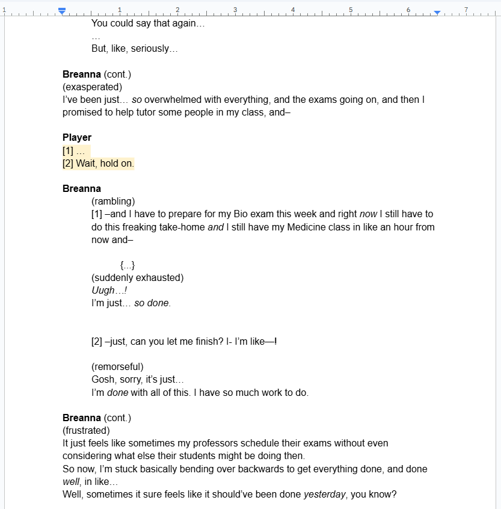
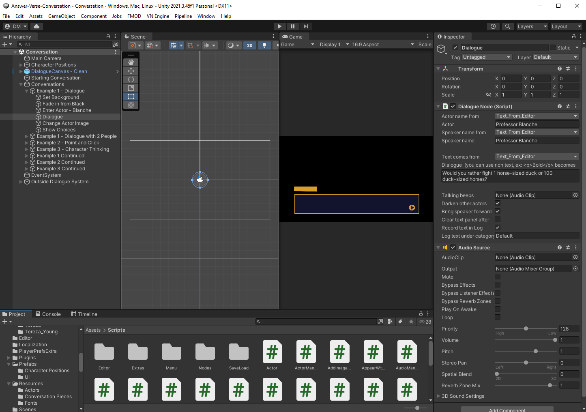
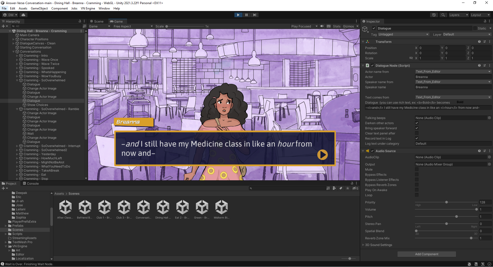
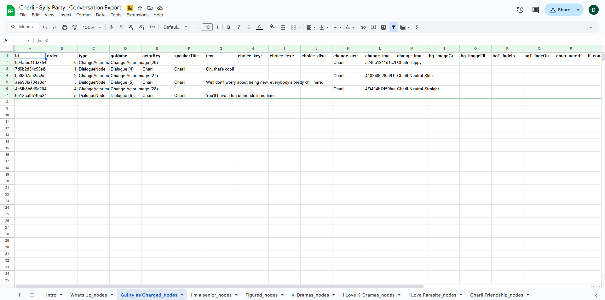

As part of the writing team for Answer Campus for the better part of a year now, one of the most significant considerations during the various stages of design for each new (or revised) narrative beat is how such beats are implemented into the existing dialogue system. During the initial development of Answer Campus (now Answer Campus: The First Semester), the writing-to-dialogue pipeline was straightforward:
For most of Answer Campus: The First Semester’s initial development after the first demo release and narrative restructuring, the final two steps of this process were slightly cumbersome. Most of the developers and the writing team (myself included) utilized Google Docs and Sheets to manage conversations and map out the main narrative of The First Semester. This, of course, means that we would not be able to see how these would play in-game until the entire script was completed and then implemented into the conversation framework in Unity (which is the engine Answer Campus uses).
Answer Campus uses a custom built conversation system, primarily based around individual nodes. Initially the writing team would finalize scripts and publish them onto the Answer Campus shared drive to be referenced by the project leads and the coding team, but it was later decided that the writers themselves should be able to directly implement their scripts into the dialogue codebase and then export a scene with their implemented dialogue. While this helped expedite the writing-to-dialogue process, it also meant that the writing team would also have to familiarize themselves with the dialogue codebase itself and, importantly, map each individual line of dialogue into the dialogue system (without overflowing the text box) as well as ensuring the conversation doesn’t loop or softlock at any point. This takes time and, again, you can’t see how your conversation will play out in game until you implement it. It also means you have to download, and open, Unity yourself.
During my time writing for Answer Campus, while I initially relied on scriptwriting, I started to instead ditch the scriptwriting process altogether in favor of working directly within the dialogue codebase. I would plan and write my dialogue inside the code while working off of a general idea of how things would go, while letting the dialogue itself flow naturally. This was great at expediting the implementation, since I was implementing the dialogue live, but it also meant that I would have to concern myself with the pacing and the layout of the conversation as it was being written while dealing with the intricacies of the codebase. This, very often, would result in burnout, especially when dealing with some of the bigger conversations planned.
With development starting on Answer Campus: The Second Semester, there has been discussion about revising the various pipelines for the game’s development and among them is a streamlining of the writing process and the dialogue system. Specifically, Answer Campus 2’s writing will largely be done using a newly developed export system for the game’s dialogue that can be managed and edited via Google Sheets.
With the new workflow, the semester’s conversations can be directly mapped and written inside a Sheet document (including the various effects and scripting) that will then be imported into the codebase and immediately appear as properly formatted dialogue. Going forward, the hope is that this new workflow will expedite the writing process even further and centralize it, as any and all new conversations can be imported inside the existing dialogues without having to be individually uploaded and implemented.